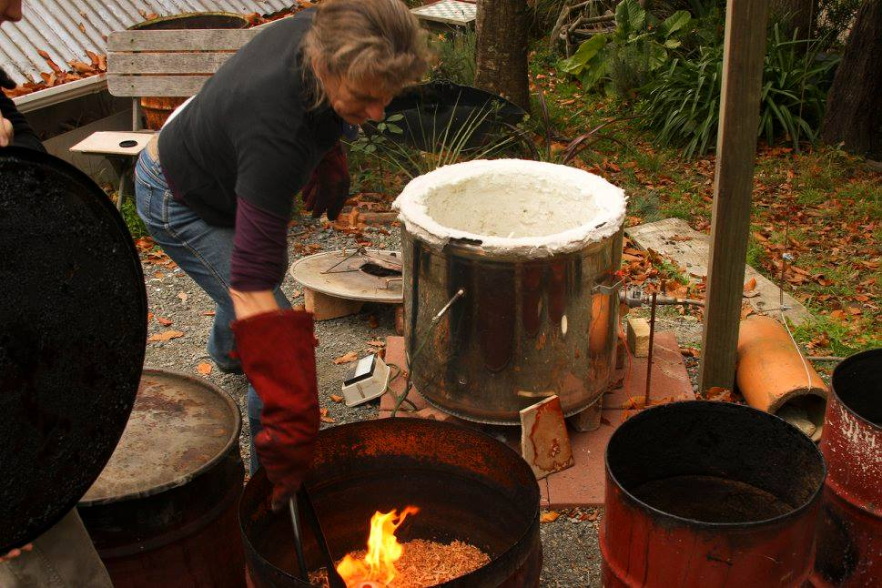
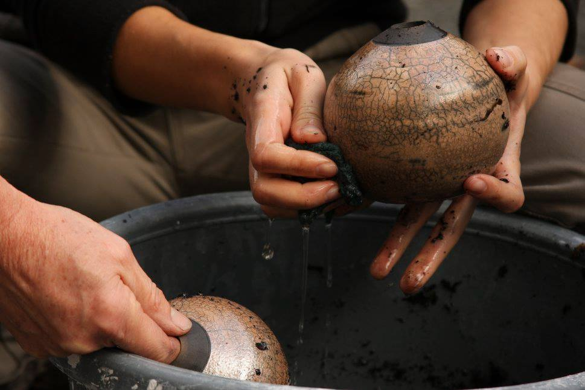

Using the Raku Kiln with wood chips
Raku in full flame

At present I am very fascinated with raku firing, the element of surprise, the variety of
colours and working with fire. My work includes functional tableware, candle holders,
wind chimes and much more. The work in my gallery is all original and made on the premises.
Find more images on the
Tai Tane Pottery Facebook page

In the beautiful environment of the Marlborough Sounds where I have my studio and gallery,
I am creatively inspired by nature and the peacefulness of what is around me.
I was introduced to pottery in 1992 as I came first to New Zealand and I fell in love with it.
It is a very tactile form of art and I love working with my hands.
Back in Germany I attended a graphic design school for two years from 1980 to 1982
and then trained in organic farming.
20 years ago I moved to New Zealand. I opened my own gallery in 1988. I work mainly on the wheel
but also enjoy doing some slab work and hand building.
Just 30 minutes drive from Picton, 45 minutes from Blenheim or 1 hour from Nelson
Something went wrong... Unable to load map... Please try to enable javascript
Get in touch.
Tai Tane Pottery
810 Queen Charlotte Drive
RD1 Picton 7281
Marlborough Sounds, New Zealand
Phone: 03 574 2140
Mobile: 021 124 1779
Email: renatevpc@gmail.com